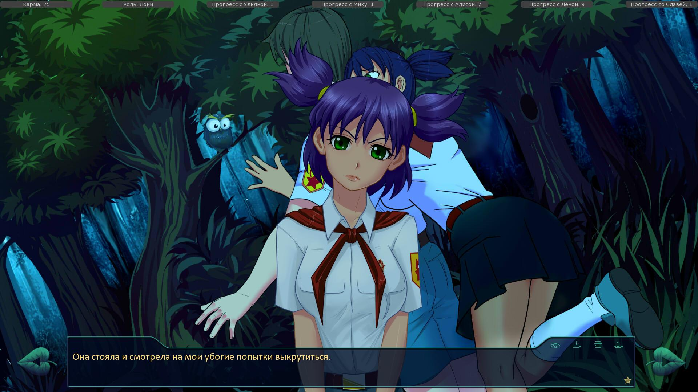

Если появляется окошко traceback
Страница 3 из 12 •  1, 2, 3, 4 ... 10, 11, 12
1, 2, 3, 4 ... 10, 11, 12
Re: Если появляется окошко traceback
автор 7dl-kun в Вт 2 Дек 2014 - 20:10

7dl-kun- Находка для шпиона

- Сообщения : 3026
Дата регистрации : 2014-09-07
Откуда : здесь столько наркоманов?
Re: Если появляется окошко traceback
автор Гость в Вт 2 Дек 2014 - 20:34
While running game code:
File "game/scenario_alt/alt_prologue.rpy", line 176, in script
$ make_names_unknown()
File "game/scenario_alt/alt_prologue.rpy", line 176, in <module>
$ make_names_unknown()
NameError: name 'make_names_unknown' is not defined
Гость- Гость
Re: Если появляется окошко traceback
автор 7dl-kun в Вт 2 Дек 2014 - 21:32
7dl-kun- Находка для шпиона
- Сообщения : 3026
Дата регистрации : 2014-09-07
Откуда : здесь столько наркоманов?
Re: Если появляется окошко traceback
автор Гость в Вт 2 Дек 2014 - 21:37
И на 2 день вылет на карте
- Код:
While running game code:
File "game/scenario_alt/alt_day2.rpy", line 979, in script
File "game/scenario_alt/alt_day2.rpy", line 979, in python
File "script.rpy", line 162, in python
File "control/mapclass.rpy", line 38, in python
KeyError: 'dv_us_house'
-- Full Traceback ------------------------------------------------------------
Full traceback:
File "D:\games\Everlasting Summer\1.1\renpy\bootstrap.py", line 265, in bootstrap
renpy.main.main()
File "D:\games\Everlasting Summer\1.1\renpy\main.py", line 327, in main
run(restart)
File "D:\games\Everlasting Summer\1.1\renpy\main.py", line 78, in run
renpy.execution.run_context(True)
File "D:\games\Everlasting Summer\1.1\renpy\execution.py", line 509, in run_context
context.run()
File "D:\games\Everlasting Summer\1.1\renpy\execution.py", line 288, in run
node.execute()
File "D:\games\Everlasting Summer\1.1\renpy\ast.py", line 720, in execute
renpy.python.py_exec_bytecode(self.code.bytecode, self.hide, store=self.store)
File "D:\games\Everlasting Summer\1.1\renpy\python.py", line 1304, in py_exec_bytecode
exec bytecode in globals, locals
File "game/scenario_alt/alt_day2.rpy", line 979, in <module>
$ set_zone('dv_us_house', 'alt_day_2_event_dv_us_house')
File "script.rpy", line 162, in set_zone
File "control/mapclass.rpy", line 38, in set_zone
KeyError: 'dv_us_house'
Гость- Гость
Re: Если появляется окошко traceback
автор Гость в Сб 10 Янв 2015 - 14:39
I'm sorry, but an uncaught exception occurred.
While running game code:
File "control/mapclass.rpy", line 118, in script
File "control/mapclass.rpy", line 118, in <module>
File "control/mapclass.rpy", line 96, in overlay
KeyError: 'available'
-- Full Traceback ------------------------------------------------------------
Full traceback:
File "control/mapclass.rpy", line 118, in script
File "d:\renpy-6.18.3\renpy\ast.py", line 785, in execute
File "d:\renpy-6.18.3\renpy\python.py", line 1382, in py_exec_bytecode
File "control/mapclass.rpy", line 118, in <module>
File "d:\renpy-6.18.3\renpy\ui.py", line 247, in interact
File "d:\renpy-6.18.3\renpy\display\core.py", line 2149, in interact
File "d:\renpy-6.18.3\renpy\display\core.py", line 2278, in interact_core
File "d:\renpy-6.18.3\renpy\display\core.py", line 1919, in compute_overlay
File "control/mapclass.rpy", line 96, in overlay
KeyError: 'available'
Я понимаю, что поддержка андроида не декларирована, но может, сможете подсказать, что тут можно сделать?
Гость- Гость
Re: Если появляется окошко traceback
автор Demiurge-kun в Сб 10 Янв 2015 - 15:28
Впрочем я не кодер, точно не скажу...

Demiurge-kun- Хикка

- Сообщения : 216
Дата регистрации : 2014-09-13
Re: Если появляется окошко traceback
автор Гость в Сб 10 Янв 2015 - 16:01
Последний раз редактировалось: Evg66 (Сб 10 Янв 2015 - 18:09), всего редактировалось 1 раз(а)
Гость- Гость
Arlien- Людовед

- Сообщения : 1322
Дата регистрации : 2014-09-08
Re: Если появляется окошко traceback
автор Arlien в Сб 10 Янв 2015 - 18:33
Arlien- Людовед
- Сообщения : 1322
Дата регистрации : 2014-09-08
Re: Если появляется окошко traceback
автор Arlien в Сб 10 Янв 2015 - 19:29
Починить это дело в принципе можно, вырезав с кода нафиг карту и заменив ее православным текстовым меню.
Arlien- Людовед
- Сообщения : 1322
Дата регистрации : 2014-09-08
Re: Если появляется окошко traceback
автор Гость в Сб 28 Фев 2015 - 13:44
I'm sorry, but an uncaught exception occurred.
While running game code:
File "game/scenario_alt/routes/alt_mi_dj_route3.rpy", line 572, in script
File "renpy/common/000statements.rpy", line 204, in python
File "game/scenario_alt/routes/alt_mi_dj_route3.rpy", line 572, in python
NameError: name 'sfx_open_door_campus_2' is not defined
-- Full Traceback ------------------------------------------------------------
Full traceback:
File "C:\Users\Wretch\Desktop\everlasting_summer-1.1-all\everlasting_summer-1.1-all\renpy\bootstrap.py", line 265, in bootstrap
renpy.main.main()
File "C:\Users\Wretch\Desktop\everlasting_summer-1.1-all\everlasting_summer-1.1-all\renpy\main.py", line 327, in main
run(restart)
File "C:\Users\Wretch\Desktop\everlasting_summer-1.1-all\everlasting_summer-1.1-all\renpy\main.py", line 78, in run
renpy.execution.run_context(True)
File "C:\Users\Wretch\Desktop\everlasting_summer-1.1-all\everlasting_summer-1.1-all\renpy\execution.py", line 509, in run_context
context.run()
File "C:\Users\Wretch\Desktop\everlasting_summer-1.1-all\everlasting_summer-1.1-all\renpy\execution.py", line 288, in run
node.execute()
File "C:\Users\Wretch\Desktop\everlasting_summer-1.1-all\everlasting_summer-1.1-all\renpy\ast.py", line 1533, in execute
self.call("execute")
File "C:\Users\Wretch\Desktop\everlasting_summer-1.1-all\everlasting_summer-1.1-all\renpy\ast.py", line 1546, in call
renpy.statements.call(method, parsed, *args, **kwargs)
File "C:\Users\Wretch\Desktop\everlasting_summer-1.1-all\everlasting_summer-1.1-all\renpy\statements.py", line 144, in call
return method(parsed, *args, **kwargs)
File "renpy/common/000statements.rpy", line 204, in execute_play_sound
renpy.sound.play(eval(p["file"]),
File "C:\Users\Wretch\Desktop\everlasting_summer-1.1-all\everlasting_summer-1.1-all\renpy\python.py", line 1338, in py_eval
return eval(py_compile(source, 'eval'), globals, locals)
File "game/scenario_alt/routes/alt_mi_dj_route3.rpy", line 572, in <module>
play sound sfx_open_door_campus_2
NameError: name 'sfx_open_door_campus_2' is not defined
Windows-7-6.1.7601-SP1
Ren'Py 6.16.3.502
Everlasting Summer 1.0
Гость- Гость
Re: Если появляется окошко traceback
автор Гость в Сб 14 Мар 2015 - 9:55
итог прошу вставить недостающие фото где в муз клубе
p.s.сами ошибки не покажу так как их я удалил
и сам мод заслуживает продолжения!!!
Гость- Гость
Re: Если появляется окошко traceback
автор peregarrett в Сб 14 Мар 2015 - 11:56
Конкретика в баг-репортах очень помогает фиксить эти самые баги.fit пишет:в 4 дне Алисы несколько раз вылетало кажись из за символов и недостоющих фото пришлось по маньячить с текстом и в итоге я дошёл до больници
итог прошу вставить недостающие фото где в муз клубе
p.s.сами ошибки не покажу так как их я удалил

peregarrett- Находка для шпиона
- Сообщения : 3264
Дата регистрации : 2014-09-07
Возраст : 36
Re: Если появляется окошко traceback
автор 7dl-kun в Сб 14 Мар 2015 - 12:50
7dl-kun- Находка для шпиона
- Сообщения : 3026
Дата регистрации : 2014-09-07
Откуда : здесь столько наркоманов?
Re: Если появляется окошко traceback
автор Arlien в Сб 14 Мар 2015 - 13:14
Проверьте-ка, товарищ Фит, свою сборку, есть подозрение, что у вас либо очень седая версия мода (текущая - 0.16Б), либо БЛ не 1.1.
Arlien- Людовед
- Сообщения : 1322
Дата регистрации : 2014-09-08
Re: Если появляется окошко traceback
автор BaybA в Пн 30 Мар 2015 - 5:18
I'm sorry, but an uncaught exception occurred.
While running game code:
File "control/mapclass.rpy", line 119, in <module>
File "control/mapclass.rpy", line 97, in overlay
KeyError: 'available'
-- Full Traceback ------------------------------------------------------------
Full traceback:
File "game/control/mapclass.rpyc", line 119, in script
File "D:\games\everlasting_summer-1.2-all\renpy\ast.py", line 785, in execute
renpy.python.py_exec_bytecode(self.code.bytecode, self.hide, store=self.store)
File "D:\games\everlasting_summer-1.2-all\renpy\python.py", line 1382, in py_exec_bytecode
exec bytecode in globals, locals
File "control/mapclass.rpy", line 119, in <module>
File "D:\games\everlasting_summer-1.2-all\renpy\ui.py", line 247, in interact
rv = renpy.game.interface.interact(roll_forward=roll_forward, **kwargs)
File "D:\games\everlasting_summer-1.2-all\renpy\display\core.py", line 2149, in interact
repeat, rv = self.interact_core(preloads=preloads, **kwargs)
File "D:\games\everlasting_summer-1.2-all\renpy\display\core.py", line 2278, in interact_core
self.compute_overlay()
File "D:\games\everlasting_summer-1.2-all\renpy\display\core.py", line 1919, in compute_overlay
i()
File "control/mapclass.rpy", line 97, in overlay
KeyError: 'available'
Windows-post2008Server-6.2.9200
Ren'Py 6.18.3.761
Everlasting Summer 1.2
Мод же запустился и работал на 1.2
Это же не из-за версии такое выдает?
BaybA- Ньюфаг

- Сообщения : 5
Дата регистрации : 2015-03-30
Возраст : 23
Re: Если появляется окошко traceback
автор Arlien в Пн 30 Мар 2015 - 7:15
Arlien- Людовед
- Сообщения : 1322
Дата регистрации : 2014-09-08
Re: Если появляется окошко traceback
автор BaybA в Пн 30 Мар 2015 - 16:39
BaybA- Ньюфаг
- Сообщения : 5
Дата регистрации : 2015-03-30
Возраст : 23
Re: Если появляется окошко traceback
автор peregarrett в Пн 30 Мар 2015 - 16:47
peregarrett- Находка для шпиона
- Сообщения : 3264
Дата регистрации : 2014-09-07
Возраст : 36
Re: Если появляется окошко traceback
автор BaybA в Пн 30 Мар 2015 - 20:25
пожалуй так и сделаю ради этого мода. Уж больно он хорошperegarrett пишет:Скачай версию 1.1 с модпаком, по ссылке с вики. Она ничуть не хуже 1.2, а гемора меньше.
p.s знать бы еще когда выйдет фул версия
BaybA- Ньюфаг
- Сообщения : 5
Дата регистрации : 2015-03-30
Возраст : 23
Re: Если появляется окошко traceback
автор Элдхэнн в Вс 5 Апр 2015 - 0:36
60: show sl serious pioneer with dpsr
s/dpsr/dspr/

Элдхэнн- Людовед
- Сообщения : 1002
Дата регистрации : 2015-03-30
Возраст : 38
Откуда : Москва
Re: Если появляется окошко traceback
автор Элдхэнн в Вс 5 Апр 2015 - 2:30
Элдхэнн- Людовед
- Сообщения : 1002
Дата регистрации : 2015-03-30
Возраст : 38
Откуда : Москва
Re: Если появляется окошко traceback
автор Элдхэнн в Вс 5 Апр 2015 - 13:43
- Спойлер:

Элдхэнн- Людовед
- Сообщения : 1002
Дата регистрации : 2015-03-30
Возраст : 38
Откуда : Москва
Re: Если появляется окошко traceback
автор Элдхэнн в Вс 5 Апр 2015 - 13:58
Элдхэнн- Людовед
- Сообщения : 1002
Дата регистрации : 2015-03-30
Возраст : 38
Откуда : Москва
Страница 3 из 12 • 1, 2, 3, 4 ... 10, 11, 12